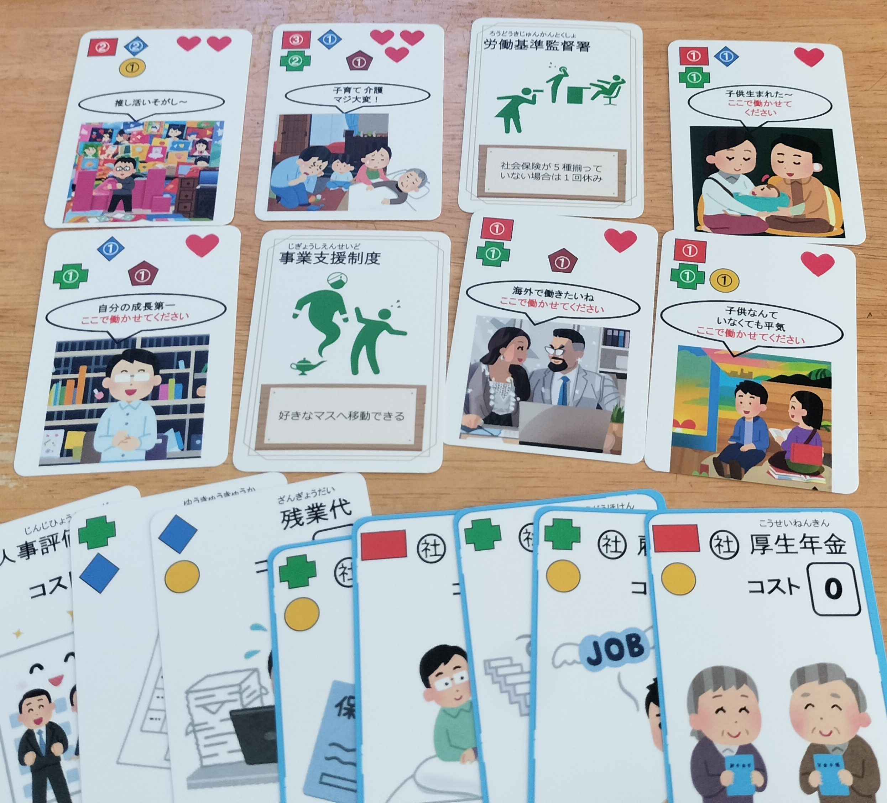
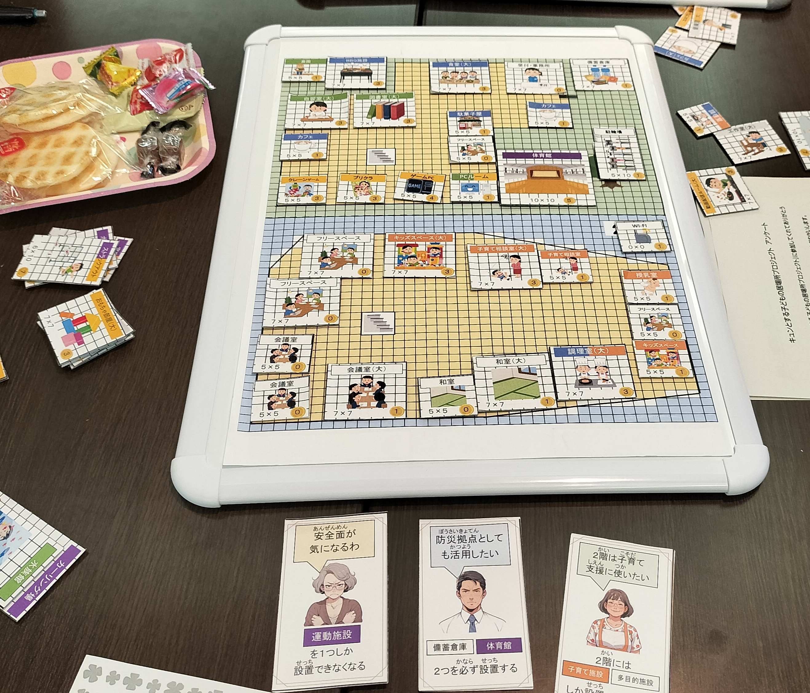

ボドツナワークショップとは
伝え方のテクニックを教える研修ではありません。
相手に伝わる状態を、自分で作る研修です。
遊んで、演じて、振り返ります
-
遊びます
ボードゲームで遊びます。
-
演じます
短い演劇のワークをします。
-
振り返ります
自分が何をしたか、どう感じたかを振り返ります。
参加者はボードゲームで遊び、短い演劇のワークをして、そのとき自分が何をしたか、どう感じたかを振り返ります。
講師は正解を教えず、参加者を評価しません。先に身体と気持ちが動き、思考と言葉は後から来る、という順番を体験する構成です。
基本情報
- 対象
- 企業・団体のチーム（社員、職員）が対象です。
- 形式
- 1日版（5時間）と3時間版の2種類があります。
- 人数
- 1班8人が基本です。16人（2班）までは講師1人で実施します。
- 実施場所
- 貴社・貴団体の会議室など、ご用意いただいた会場に伺います。
- 講師
- 長山陽司（ボードゲームでツナグ手 代表）が担当します。2026年8月末時点で、子どもたちとのボードゲームイベントを180回行っています。
1日の流れ（1日版・5時間）
午前に4つ、午後に4つのユニットを行います。
午前
- 1
はじめに
研修の考え方と約束ごとを聞きます。
- 2
リラックス運動
身体の余計な力に気づきます。
- 3
声と身体のゲーム
同じ一言を、声だけ・身体も使って伝え分けます。
- 4
言葉を使わないゲーム
言葉なしで、相手の動きを見て合わせます。
午後
- 5
負けと運のゲーム
ゲーム中に実際に起きた場面で、相手の立場に立ちます。
- 6
言葉を当てるゲーム
組で相談して、誰の案でもない第三の答えを作ります。
- 7
「ありがとう」のワーク
誰に言いたいかを思い浮かべると、同じ一言がどう変わるかを体験します。
- 8
締めくくり
仕事の中で自分は何がしたいのかを、一人で考えて持ち帰ります。
3時間版は、午後の「負けと運のゲーム」を外し、ほかのユニットを短くした構成です。
研修の約束ごと
安心して参加していただくために、次のことをお約束したうえで実施します。
人事評価には使いません
研修中の発言や様子は、人事評価に使わない前提で実施します。
カードは本人が持ち帰ります
最後に書くカードは本人が持ち帰ります。会社には提出しません。
いつでもパスできます
演技やワークは、いつでもパスできます。
全体の前で発表させません
自分の気持ちや答えを、全体の前で発表させることはありません。例外は「ありがとう」のワークで、全員の前で一言ずつ言います。
講師は正解を教えません
講師は正解を教えず、参加者を評価しません。そのため、物足りなく感じる方がいるかもしれません。
これまでの実施例
ボドツナがこれまでに企業・団体・自治体で行ってきた、ボードゲームを使った研修・ワークショップの例です。

東京社労士会様
「会社の福利厚生」をテーマにしたオリジナルゲームを制作し、制度を体験していただきました。
電気通信事業会社 購買部門様
購買部門の業務と社会課題とのつながりを、オリジナルゲームで表現しました。

藤沢市 青少年課様
子どもたちが理想の居場所を表現できる「居場所づくりゲーム」を制作し、ワークショップを行いました。
※ いずれも、ご依頼に合わせて制作したオリジナルゲームを使った実施例です。ボドツナワークショップとは内容が異なります。
詳しくはゲーム化事業ページをご覧ください。
仲良くなんてならなくていい。
勝っても負けても、また遊ぼう。
これが、ボドツナの合言葉です。研修の根っこにも、同じ考え方があります。
「協調性」と「主体性」を、同時に求めていませんか
多くの職場が、若手に「周りに合わせてほしい」と求めながら、同時に「自分の意見を持ってほしい」「個性を出してほしい」と求めています。周りに合わせれば「主体性がない」と言われ、意見を言えば「協調性がない」と言われます。どちらに振っても否定される、この状態をダブルバインド（二重拘束）と呼びます。
「コミュニケーション能力が足りない」という言葉は、その中身を決めないまま、この矛盾を若手の側の問題にしてしまいがちです。板挟みになった人は、黙るか、無理に合わせるか、離れていくかしかなくなります。私たちは、これは個人の能力の問題ではなく、「協調性」という前提そのものの問題だと考えています。
「協調性」ではなく、「社交性」を
職場では、部門や世代の壁を「仲良くなる」ことで越えようとしがちです。同じ気持ちを持つことを前提にした力を、協調性と呼びます。けれど、同じ気持ちを求められる場では、違う考えを持つ人は黙るか、無理に合わせるか、離れていくしかありません。
私たちは、これから必要なのは協調性ではなく社交性だと考えています。社交性とは、バラバラな人間がバラバラなままで、どうにかうまくやっていく力です。表面上仲良くすることではなく、考え方の違う相手の言葉も、ちゃんと聞けるかどうかです。
「勝っても負けても、また遊ぼう」は、仲良くなろうという言葉ではありません。負かした相手とも、負かされた相手とも、もう一度同じテーブルに座れるかどうかを言っています。ボードゲームの卓では、相手の手番を待ち、相手の言い分を聞かないと、ゲームは進みません。仲良くなくても成り立つ場だからこそ、社交性が育ちます。代表の長山の言葉で言えば、「嫌いなやつがいてもいい。でも嫌いなやつの言葉もちゃんと聞こう」です。
「相手をリスペクトしよう」とよく言われます。それはその通りですが、それだけでは足りない感覚があります。どんな相手にも、一生懸命やってきたことがあります。それを尊重して初めて、相手の意見を聞く構えになれます。仲良くなくても相手を認めて一緒に働けることが、ビジネスのマナーなのかもしれません。
「会話」ではなく、「対話」の基礎体力を
私たちは、文脈を共有する人同士のやりとりを「会話」、文脈を共有しない相手と、それでも一緒にいるために言葉を交わすことを「対話」と分けて考えています。日本の職場は「察してもらえる」会話に慣れているぶん、部門・世代・立場の違う相手との対話が苦手です。とくに、AさんとBさんの意見から、どちらのものでもない第三の結論Cを一緒につくることを、根気強く続けるのが不得意だと言われます。
ボードゲームには、この「Cをつくる」場面が何度も出てきます。ヒントが重なると消されてしまう協力ゲームでは、他の人と違う視点を出さないと勝てません。同じお題でも、人によって思い浮かべるものがまるで違うことが、ゲームの結果として卓の上に残ります。ずれが罰されず、発見として扱われる場で、対話の基礎体力が育ちます。
私たちが居場所で毎週やっていることを、そのまま企業の現場に持ち込みます。大人も子どもも同じルールで本気で遊ぶと、上下関係や属性の壁が消えて、対等になります。研修では、その対等さを、部門と世代のあいだにつくります。
背景にある考え方
このワークショップは、エドワード・L・デシの自己決定理論（『人を伸ばす力』）、平田オリザの対話論（『わかりあえないことから』）、スタニスラフスキーの俳優訓練（『俳優の仕事』）をもとに組み立てています。
いずれも考え方の出典として紹介しています。効果を保証するものではありません。
料金
3時間版
3時間
- 1班8人が基本です
- 16人（2班）までは講師1人で実施します
1日版
5時間
- 1班8人が基本です
- 16人（2班）までは講師1人で実施します
※ 交通費については、お問い合わせの際にご案内します。
※ 研修専用のオリジナルゲーム制作をご希望の場合は、ゲーム化事業ページをご覧ください。
貴社の研修導入が、地域の子どもたちの居場所を支えます。
よくあるご質問
演技が苦手でも参加できますか？
参加できます。演技やワークは、いつでもパスできます。
何名で実施できますか？
1班8人が基本です。16人（2班）までは講師1人で実施します。それ以外の人数は、お問い合わせの際にご相談ください。
会場はどうすればよいですか？
貴社・貴団体の会議室など、ご用意いただいた会場に伺います。会場手配のご相談も可能です。
オンラインでも実施できますか？
対応していません。同じ場所でボードゲームと演劇のワークを行うため、対面での実施が必須となります。
秘密保持には対応できますか？
NDA締結可能です。お気軽にお申し付けください。
実施のご相談
研修担当者様、お気軽にお問い合わせください。
ボドツナワークショップ お問い合わせフォーム
1営業日以内にご返信いたします。